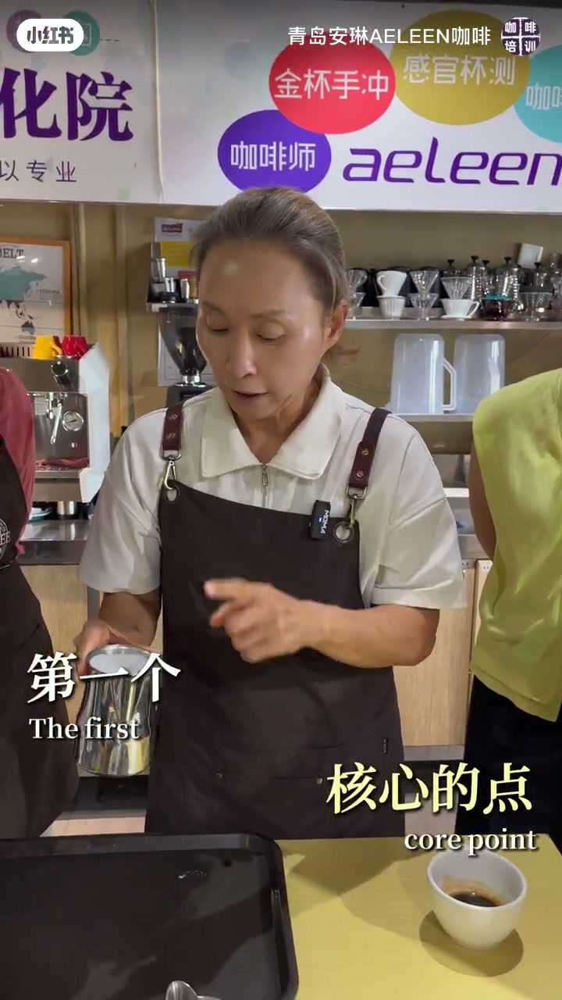
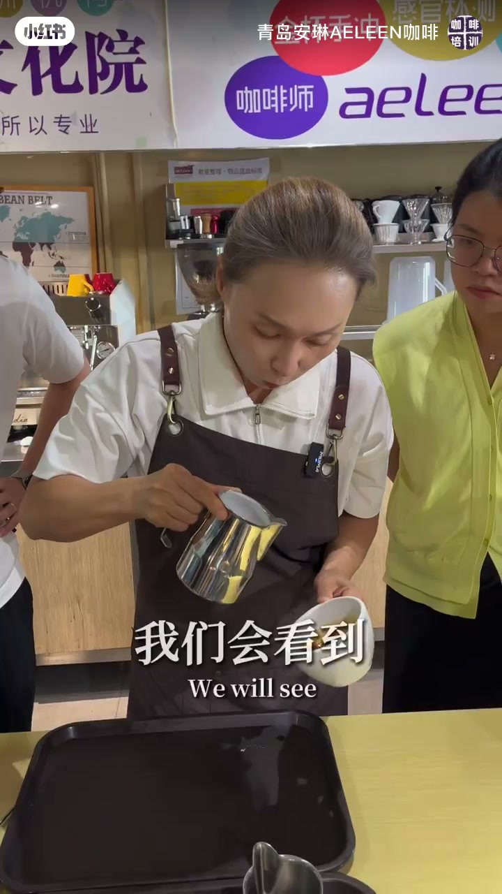
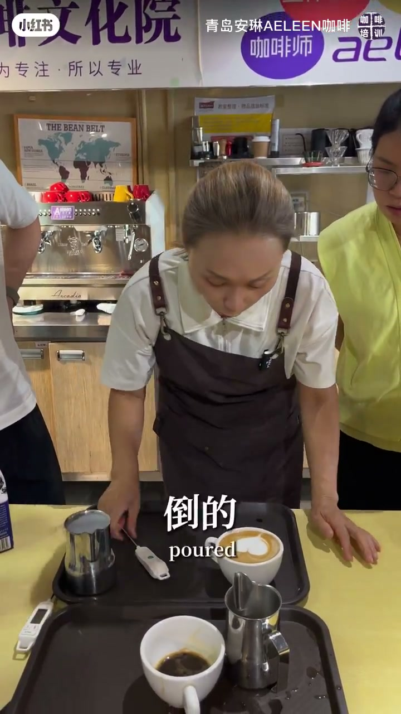
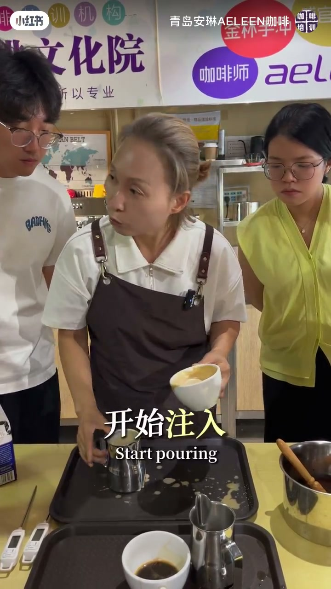

01
中文
奶缸的牛奶一定要在手里不要闲下来。
EN
The milk in the pitcher must never sit idle in your hand.
表达提示sit idle（闲下来）

Scene English · 咖啡拉花 · 大白心三步法
Learn the Big Heart Latte Art in 3 Steps
🎧 语音讲解
The Milk Never Rests
情境奶缸里的牛奶必须持续晃动融合，停 5 秒就分层失去流动性。
奶缸的牛奶一定要在手里不要闲下来。
The milk in the pitcher must never sit idle in your hand.
表达提示sit idle（闲下来）
停了 5 秒都分层。
Leave it for five seconds and it separates.
表达提示separate（分层）
靠着奶缸壁摇晃，能看到大漩涡。
Swirl against the pitcher wall and you'll see a big vortex.
表达提示vortex（漩涡）
「持续融合」的表达
「靠缸壁摇晃」换说法

Step One: Steady the Pour
情境从液面高约 10 公分处开始倒，瞄准液面最深的位置。
从液面高到 10 公分左右。
Start about 10 centimeters above the surface.
表达提示centimeters（公分）
瞄准液面最深的位置。
Aim for the deepest point of the surface.
表达提示deepest point（最深点）
牛奶和奶泡一起注到咖啡下面去。
The milk and foam pour together under the coffee surface.
表达提示pour together（一起注入）
「油质稳定」的表达
「瞄准最深点」换说法

Steps Two and Three: Pour and Finish
情境到半满时放下奶缸从液面中心偏下注入，收尾时抬高 5 公分翘起。
从液面中心偏下开始注入。
Begin pouring just below the center of the surface.
表达提示below the center（中心偏下）
把奶缸抬高 5 公分收尾。
Lift the pitcher 5 centimeters to finish.
表达提示finish（收尾）
稍微翘起来，流量变小。
Tilt it slightly so the flow softens.
表达提示soften（变小/变柔）
「中心偏下注入」的表达
「收尾」换说法

Position and Angle
情境老师强调只要给角度和位置，以及何时注、何时倾斜、何时提高、何时收尾，就是拉花的全部。
我只要给你做一个角度、位置。
All I give you is an angle and a position.
表达提示angle（角度）
什么时间注、什么时间倾斜。
When to pour, when to tilt.
表达提示when to（何时）
什么时间提高、什么时间收尾。
When to lift, when to finish.
表达提示lift（提高）
「位置与角度」的表达
「时机」换说法
牛奶为什么要一直晃动？
第一步油质稳定从多高开始？
注入位置在哪里？
收尾怎么做？
静置几秒就分层。
高度波动会冲破液面。
靠边注入奶泡铺不开。
犹豫会导致图案拖尾。